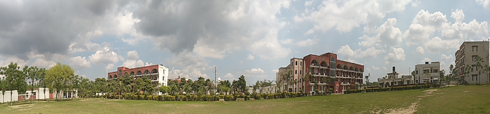

P.U. Swami Sarvanand Giri Regional Centre
About P.U. Swami Sarvanand Giri Regional Centre
 To develop young professionals through experiential learning hinged on evolving societal mores as per global needs.Mission:
To promote professional education through the use of ethical based technology oriented education and to prepare students for a career as per global requirement.
What sets us apart?
NAAC - A Grade to Panjab University.
Admissions based purely on National rankings - AIEEE.
100% Post Graduate and research oriented faculty.
State of the art infrastructure, a completely networked campus and top of the line computer centres.
Multi-disciplinary batch.
Balanced course structure.
Rigorous training in quantitative as well as qualitative analysis